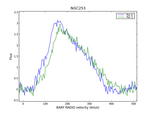

ASAP Homepage

Introduction
The ATNF Spectral Analysis Package is a new
software package to reduce single-dish, single-pointing spectral
line observations. At this stage it is tuned towards data from
ATNF instruments and reads/writes rpfits, sdfits and ms data.
more...
Current Release
ASAP latest stable version 1.2.1 was released on December, 6th 2005. It can be obtained in the Download section.
Screenshots
Here are some example plots.
How to run
To get started, simply type "asap" at the *nix command line prompt.
Loading ASAP...
Welcome to ASAP v1.2.1 (2005/12/06) - the ATNF Spectral Analysis Package
Please report any bugs to:
asap@atnf.csiro.au
[IMPORTANT: ASAP is 0-based]
Type commands() to get a list of all available ASAP commands.
ASAP>
Documentation
ASAP has a user guide for general use and telescope specific examples,
and a reference manual for people who want to write scripts to reduce
and analyse their data.
More detailed help is available via the help function.
Download
ASAP source code and binaries are available in the ATNF ftp area
- Current stable release source code snapshot asap source
- A binary tar archive of the latest stable releaselinux binary.
You will need to have the following libraries:
gcc-3.3, blas, lapack, g2c, boost_python and of course
python2.3.
The matplotlib python module has to be installed too.
- For Mac OSX 10.4 follow these instructions.
Important
ASAP is 0-based, i.e. all ranges (vectors) go from
0..n-1, if n is the number of elements.